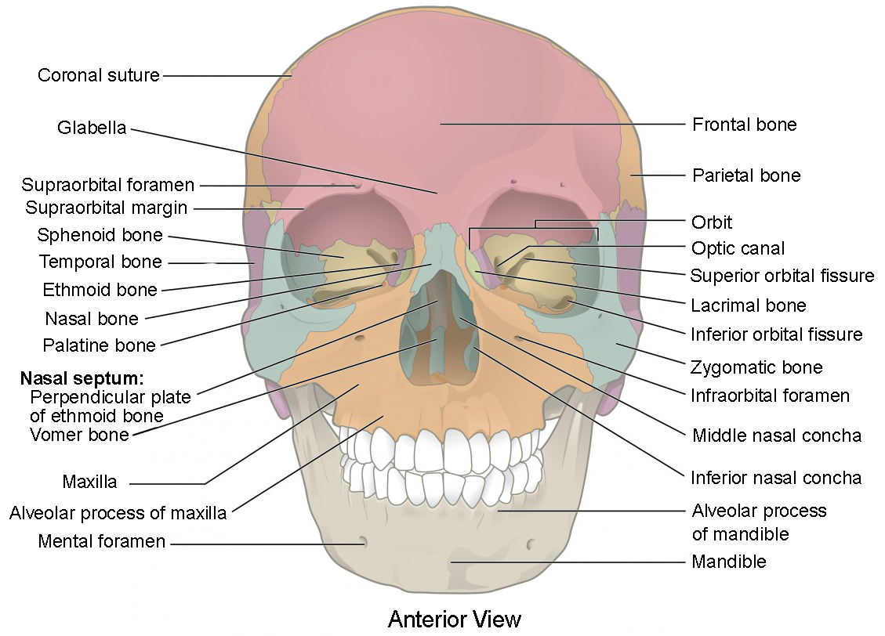
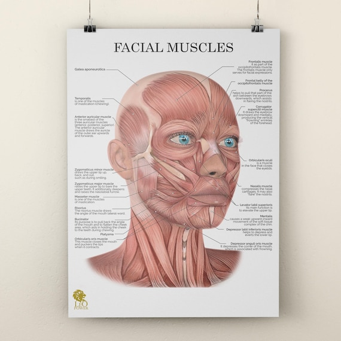
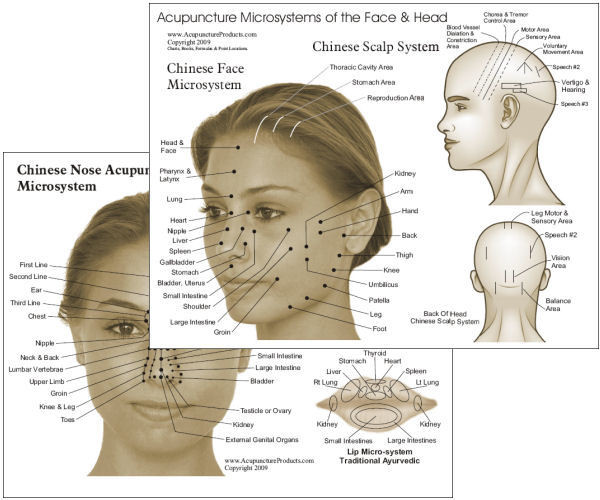

读懂每一寸肌肤
从容面对岁月
上传照片 · AI智能标注面部问题 · 针对性面部瑜伽方案
上传照片 · AI智能标注面部问题 · 针对性面部瑜伽方案
正面素颜 · 光线充足 · 不戴眼镜帽子
支持 JPG/PNG

表皮是屏障如保鲜膜；真皮含胶原蛋白和弹性纤维，像床垫海绵。30岁起每年流失1%胶原、2%弹性。紫外线穿透玻璃直达真皮层，是皮肤老化的头号杀手。

浅表肌腱膜系统，面部的"弹性吊床"。由颧韧带、下颌韧带、颈阔肌韧带组成悬挂系统。40岁后韧带松弛→软组织下垂→法令纹加深、下颌线模糊。

额肌、眼轮匝肌、口轮匝肌等几十块肌肉控制表情。反复收缩→动态皱纹。肌纤维萎缩或肥大→面部不对称。肉毒素注射的作用层。

深层脂肪垫（颧脂肪垫、颊脂肪垫）和浅层脂肪隔（眶下脂肪）。萎缩→凹陷（太阳穴、苹果肌）；膨出→眼袋、双下巴。脂肪移位是衰老最显著的表征。

40岁后骨骼年吸收0.5%。眼眶骨吸收→眼窝凹陷、眼角下垂；上颌骨吸收→法令纹加深；下颌骨变长→双下巴。骨骼是面部轮廓的"地基"。

骨吸收→地基塌陷→筋膜挂不住→脂肪下滑→皮肤起皱。深层决定浅层，只涂护肤品不练筋膜肌肉，效果有限。

眼眶骨、颧骨、上颌骨、下颌骨构成面部轮廓框架。骨质流失是衰老最深层的驱动力。

了解每一块肌肉的位置和功能，才能精准锻炼。面部瑜伽就是针对性地训练这些肌肉。

⏱3分钟·🕐早晚·🎯SMAS+颧脂肪垫
V型指从鼻翼沿法令纹向耳根提拉→压耳垂3秒→重复10次。只向上！

⏱2分钟·🕐早晚·🎯眼轮匝肌
无名指点涂眼霜→眼尾打圈30秒→向太阳穴提5次。力度最轻！
⏱5分钟·🕐每日2-3次·🎯颈阔肌+下颌韧带
抬头看天花板→舌顶上颚→双手提拉→保持5秒。办公室就能做。
⏱4分钟·🕐每日2次·🎯颧脂肪垫
找颧骨下方凹陷→向上向外提拉→画圈30秒→压四白穴3秒。

⏱2分钟·🕐每日2次·🎯口轮匝肌
食指中指放嘴角→向上向外提拉→微笑5秒→重复10次。
⏱3分钟·🕐早晚·🎯颈阔肌
中指从锁骨向上推→三线各10次→由下往上一个方向→轻拍30秒。
⏱5-8分钟·🕐每晚·🎯全脸
额头→太阳穴→鼻翼→耳前→下巴→耳后→锁骨。单向推压。
⏱1分钟·🕐随时·🎯颧大肌
嘴角向两侧拉开→向上提→保持10秒→5次。等红灯都能做。
⏱2分钟·🕐早晚·🎯额肌
食指从眉心向发际线交替推压→到达发际线后轻叩10次→打圈30秒。
⏱2分钟·🕐每日2次·🎯鼻肌
食指尖放鼻翼两侧→向上推压→同时鼻孔张合10次→放松重复。
⏱3分钟·🕐早晚·🎯口轮匝肌
食指中指夹住上下唇→向外轻拉→发"O"音5秒→"E"音5秒→交替10次。
⏱2分钟·🕐每晚·🎯耳周淋巴
捏耳垂向下拉5秒→沿耳廓向上按摩→耳后推至颈部→最后到锁骨。
⏱3分钟·🕐每日2次·🎯颧大肌+SMAS
掌根从颧骨向太阳穴45°推压→打圈按摩10秒→重复8次。
⏱3分钟·🕐随时·🎯全脸筋膜
深吸气鼓起双颊→屏5秒→缓慢吐气收脸颊→重复10次。增加血氧。
⏱2分钟·🕐随时·🎯咬肌
掌根按咬肌→张嘴最大→缓慢闭合约10秒→重复5次。防国字脸。
⏱3分钟·🕐每晚·🎯全脸筋膜
手搓热→掌心分别按压额头/眼周/面颊/下颌各15秒→重复2遍。助眠。
⏱1分钟·🕐每日2次·🎯上唇方肌
食指横放人中→向上微提→保持3秒→5次。改善人中变长。
⏱3分钟·🕐随时·🎯皱眉肌
闭眼→彻底放松眉心→想像眉间被温柔展开→配合深呼吸1-2分钟。
⏱3分钟·🕐每日1次·🎯咬肌
掌根按咬肌画圈按摩2分钟→张嘴保持10秒→重复5次。改善脸宽。
⏱2分钟·🕐早晚·🎯眼轮匝肌
紧闭眼5秒→睁大眼5秒→交替10次→最后闭眼轻按眼球10秒放松。
单侧睡6-8小时→法令纹/眼纹该侧更深。推荐仰卧+真丝枕套。
低头60°颈椎承重27kg→颈纹+双下巴。举到眼平齐，30分钟抬头。
视力差→眯眼→鱼尾纹。压力大→皱眉→川字纹。每天几百次。
光老化占80%。阴天/室内/冬天都要SPF30+。最便宜的抗衰投资。
糖+胶原=糖化反应→胶原变硬变脆→皮肤松弛暗黄。
血管收缩→供血减少→胶原合成受阻。吸烟者平均显老5-10岁。
皮质醇升高→分解胶原。错过22:00-2:00皮肤修复黄金期。
皮肤含水量足才饱满。每天1.5-2L水。咖啡茶不能替代。
酒精→血管扩张→面部潮红→毛细血管破裂→皮肤松弛。
频繁磨砂→皮脂膜破坏→屏障受损→敏感泛红。每周1次即可。
高枕→颈部前倾→颈纹加深+双下巴。选记忆棉枕保持颈椎自然曲线。
钠摄入过多→水分滞留→面部浮肿→加重眼袋和双下巴。
化妆品+油脂堵塞毛孔→加速皮肤老化。再累也要卸妆洁面。
缺乏运动→全身循环差→皮肤供氧不足→暗沉无光。每周3次有氧。
盘腿→骨盆倾斜→脊柱侧弯→面部不对称加重。保持正确坐姿。
长期一侧脸朝镜头→单侧肌肉过度使用→大小脸。换边拍照。
寒冷+干燥+风→皮肤血管收缩→代谢减慢→加速老化。戴口罩围巾。
压力大不自觉咬紧→咬肌持续紧张→脸变宽。舌尖轻抵上颚放松。
AGEs（糖化终产物）堆积→胶原硬化→皮肤蜡黄。减少精制糖和油炸。
自由基攻击细胞→加速衰老。多吃蓝莓番茄绿茶，补充维C维E。
💰15000-25000元·⏱1-2年·🎯全脸紧致
射频加热真皮和筋膜层，唤醒自身胶原再生。适合35+初老，无创无恢复期。
💰10000-20000元·⏱1-2年·🎯SMAS筋膜层
精准聚焦超声直达筋膜层，如"隐形拉皮"。适合下颌线模糊、法令纹深。2-3个月效果达峰值。
💰2000-5000元·⏱4-6月·🎯动态纹
阻断神经肌肉信号，让表情肌"休息"。抬头纹/川字纹/鱼尾纹立竿见影。需定期补打。
💰3000-8000元/支·⏱6-18月·🎯凹陷
把缺失的体积补回去。不同部位不同硬度。选对医生比品牌重要。
💰10000-30000元·⏱1-2年·🎯下垂
可吸收蛋白线如"帐篷绳"拉起组织。适合中下面部下垂。1-2周恢复期。
💰1000-3000元/次·⏱1-3月·🎯补水
透明质酸直入真皮层。保养型项目，3-5次一疗程，改善干燥细纹暗沉。
💰5000-10000元/支·⏱12-18月·🎯泪沟
比玻尿酸自然，适合眼下等皮肤薄区域。同时刺激自身胶原再生。
💰50000-100000元·⏱5-10年·🎯严重松弛
终极方案。适合50+严重下垂。创伤大恢复久，务必选正规三甲医院。
💰10000-30000元·⏱长期·🎯全脸容积
自身脂肪无排异。需抽脂+填充两个手术，恢复期较长但效果持久。
💰3000-8000元/次·⏱6-12月·🎯痘坑毛孔
微针+射频双重作用。刺激胶原重塑，改善痘坑、毛孔粗大、细纹。
以下所有护肤成分建议在面部瑜伽前后使用——瑜伽激活循环后毛孔张开，吸收率提升2-3倍。
晨：洁面→水→维C→眼霜→乳液→防晒
晚：卸妆→洁面→水→精华(A醇/胜肽)→眼霜→面霜→面部瑜伽→睡眠

成分：10-20% L-抗坏血酸
功效：抗氧化、提亮、促胶原
解决：暗沉、肤色不均、细纹
用法：晨间干脸2-3滴按压，开封冷藏
顺序：水→维C→乳液→防晒
成分：视黄醇0.1-0.5%
功效：加速细胞更新、促胶原、淡纹
解决：抬头纹、法令纹、毛孔粗大
用法：仅晚间，0.1%起每周2次→逐增
注意：孕妇禁用！不与酸类同用
成分：大分子+小分子透明质酸钠
功效：吸水自重1000倍，充盈饱满
解决：干燥、细纹、缺乏弹性
用法：微湿脸上使用→立刻面霜锁水
顺序：水→玻尿酸→面霜
成分：乙酰基六肽-8(10%)
功效：温和抑制表情肌→"涂抹式肉毒素"
解决：抬头纹、川字纹、鱼尾纹
用法：早晚点涂纹路处按摩吸收
顺序：精华后→面霜前
成分：烟酰胺3-10%
功效：修复屏障、控油、提亮、抗炎
解决：暗沉、毛孔粗大、泛红
用法：每天1-2次，2-3%起建立耐受
顺序：水后→精华前
成分：神经酰胺NP/AP/EOP
功效：填充角质间隙→修复屏障→锁水
解决：干燥、敏感、脱皮
用法：每天1-2次，可混入面霜
顺序：精华后→面霜前
成分：角鲨烷(甘蔗/橄榄提取)
功效：最接近人体皮脂→速吸收+锁水
解决：干燥、按摩润滑减摩擦
用法：面部瑜伽前3-5滴搓热按压
顺序：瑜伽前/睡前封层
成分：天然维A酸前体+维C+必需脂肪酸
功效：淡化色斑、修复疤痕、滋养
解决：熟龄肌干燥松弛、痘印
用法：晚间2-3滴搓热按压或混面霜
顺序：晚间精华后
抬头纹、川字纹、鱼尾纹、鼻背纹、口角纹、鸡爪纹。表情肌反复折叠皮肤→年久成固定纹。
法令纹下垂、苹果肌凹陷、太阳穴凹陷、印第安纹、眼袋泪沟。脂肪垫萎缩或移位。
口角囊袋、木偶纹、婆婆纹、颈纹、下颌线模糊。SMAS筋膜层松弛→软组织下坠。
外轮廓不清晰、大小脸、双下巴、眼角下垂、颧骨突出。深层骨骼吸收+脂肪移位。
咬肌肥大、大小眼、嘴歪、高低脸。单侧咀嚼、表情习惯、睡姿等长期导致的肌肉失衡。